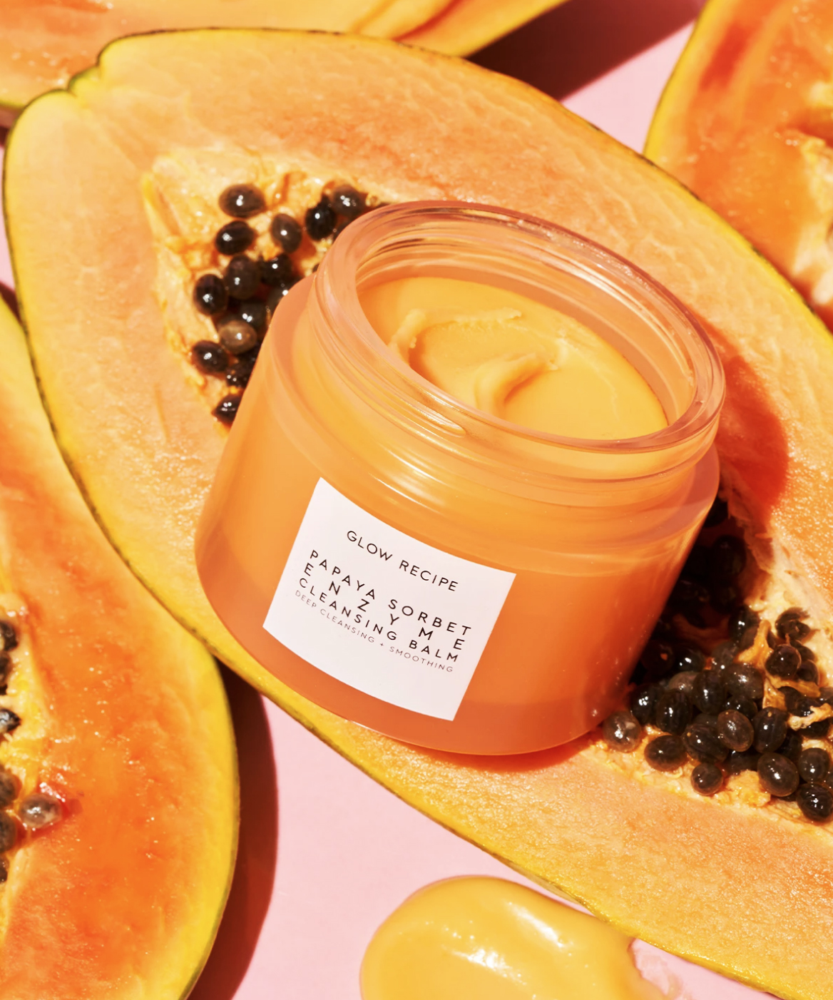

Dry Skin
DRY, DEHYDRATED, OR HAVE DRY FLAKES?
If your skin’s tight, flaky, or just not as plump as it should be, get your bounce back by giving your skin some extra TLC (read: hydration). Incorporate moisturizing ingredients, into every step of your routine both day and night.
An oil-based cleanser is a great way to hydrate the skin while also making sure it’s thoroughly cleansed. The papaya enzymes in the Papaya Sorbet Enzyme Cleansing Balm gently exfoliate the skin while papaya seed oil and papaya extract hydrates.